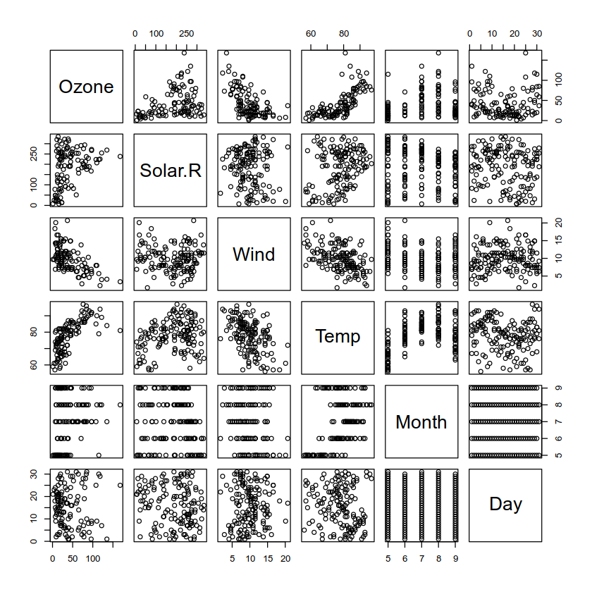
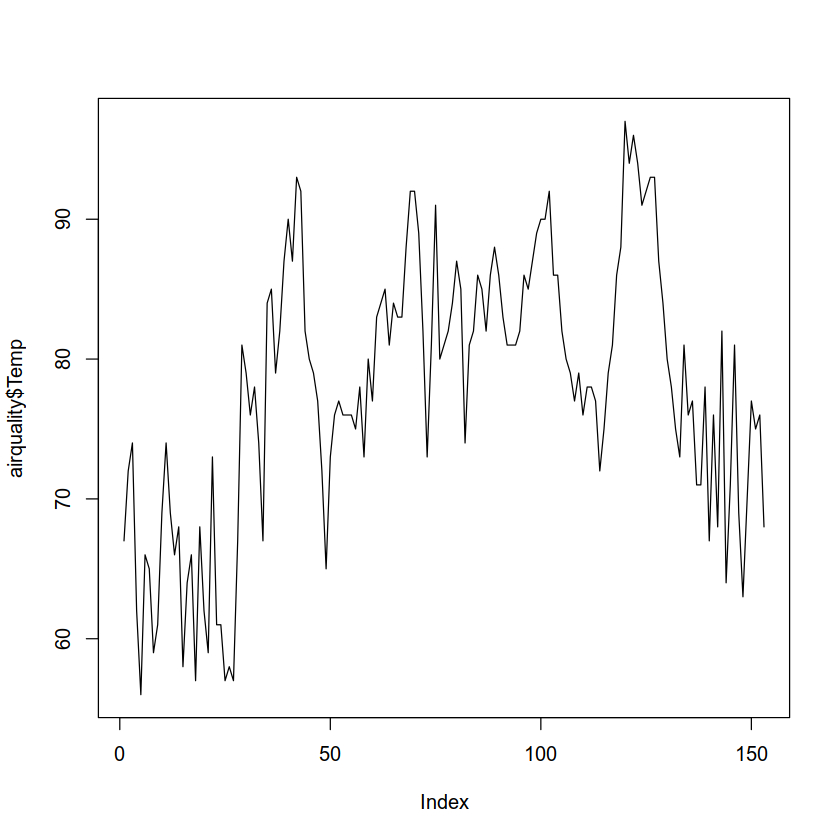

n <- c(2, 3, 5)
s <- c("aa", "bb", "cc")
b <- c(TRUE, FALSE, TRUE)
df <- data.frame(n, s, b)
df| n | s | b |
|---|---|---|
| <dbl> | <chr> | <lgl> |
| 2 | aa | TRUE |
| 3 | bb | FALSE |
| 5 | cc | TRUE |
Programming for Data Science
A data frame is used for storing data tables.
It is essentially a list of vectors of equal length.
For example, the following variable df is a data frame containing three vectors n, s, b.
n <- c(2, 3, 5)
s <- c("aa", "bb", "cc")
b <- c(TRUE, FALSE, TRUE)
df <- data.frame(n, s, b)
df| n | s | b |
|---|---|---|
| <dbl> | <chr> | <lgl> |
| 2 | aa | TRUE |
| 3 | bb | FALSE |
| 5 | cc | TRUE |
Notice that data frames are built column-wise.
When displayed in certain environemnts, the top line of the data frame is the header and it contains the column names.
The data type is listed below the column name.
Each horizontal line afterward denotes a data row, which may begin with the name of the row, and then followed by the actual data.
Each data member of a row is called a cell.
Note that on Jupyter, if we print a data frame, we get this:
print(df) n s b
1 2 aa TRUE
2 3 bb FALSE
3 5 cc TRUETo learn more about data frames in R, let’s look at some built in data.
R comes with many built-in data sets to get you started.
These do not need to be imported.
Here is the mtcars data frame.
mtcars| mpg | cyl | disp | hp | drat | wt | qsec | vs | am | gear | carb | |
|---|---|---|---|---|---|---|---|---|---|---|---|
| <dbl> | <dbl> | <dbl> | <dbl> | <dbl> | <dbl> | <dbl> | <dbl> | <dbl> | <dbl> | <dbl> | |
| Mazda RX4 | 21.0 | 6 | 160.0 | 110 | 3.90 | 2.620 | 16.46 | 0 | 1 | 4 | 4 |
| Mazda RX4 Wag | 21.0 | 6 | 160.0 | 110 | 3.90 | 2.875 | 17.02 | 0 | 1 | 4 | 4 |
| Datsun 710 | 22.8 | 4 | 108.0 | 93 | 3.85 | 2.320 | 18.61 | 1 | 1 | 4 | 1 |
| Hornet 4 Drive | 21.4 | 6 | 258.0 | 110 | 3.08 | 3.215 | 19.44 | 1 | 0 | 3 | 1 |
| Hornet Sportabout | 18.7 | 8 | 360.0 | 175 | 3.15 | 3.440 | 17.02 | 0 | 0 | 3 | 2 |
| Valiant | 18.1 | 6 | 225.0 | 105 | 2.76 | 3.460 | 20.22 | 1 | 0 | 3 | 1 |
| Duster 360 | 14.3 | 8 | 360.0 | 245 | 3.21 | 3.570 | 15.84 | 0 | 0 | 3 | 4 |
| Merc 240D | 24.4 | 4 | 146.7 | 62 | 3.69 | 3.190 | 20.00 | 1 | 0 | 4 | 2 |
| Merc 230 | 22.8 | 4 | 140.8 | 95 | 3.92 | 3.150 | 22.90 | 1 | 0 | 4 | 2 |
| Merc 280 | 19.2 | 6 | 167.6 | 123 | 3.92 | 3.440 | 18.30 | 1 | 0 | 4 | 4 |
| Merc 280C | 17.8 | 6 | 167.6 | 123 | 3.92 | 3.440 | 18.90 | 1 | 0 | 4 | 4 |
| Merc 450SE | 16.4 | 8 | 275.8 | 180 | 3.07 | 4.070 | 17.40 | 0 | 0 | 3 | 3 |
| Merc 450SL | 17.3 | 8 | 275.8 | 180 | 3.07 | 3.730 | 17.60 | 0 | 0 | 3 | 3 |
| Merc 450SLC | 15.2 | 8 | 275.8 | 180 | 3.07 | 3.780 | 18.00 | 0 | 0 | 3 | 3 |
| Cadillac Fleetwood | 10.4 | 8 | 472.0 | 205 | 2.93 | 5.250 | 17.98 | 0 | 0 | 3 | 4 |
| Lincoln Continental | 10.4 | 8 | 460.0 | 215 | 3.00 | 5.424 | 17.82 | 0 | 0 | 3 | 4 |
| Chrysler Imperial | 14.7 | 8 | 440.0 | 230 | 3.23 | 5.345 | 17.42 | 0 | 0 | 3 | 4 |
| Fiat 128 | 32.4 | 4 | 78.7 | 66 | 4.08 | 2.200 | 19.47 | 1 | 1 | 4 | 1 |
| Honda Civic | 30.4 | 4 | 75.7 | 52 | 4.93 | 1.615 | 18.52 | 1 | 1 | 4 | 2 |
| Toyota Corolla | 33.9 | 4 | 71.1 | 65 | 4.22 | 1.835 | 19.90 | 1 | 1 | 4 | 1 |
| Toyota Corona | 21.5 | 4 | 120.1 | 97 | 3.70 | 2.465 | 20.01 | 1 | 0 | 3 | 1 |
| Dodge Challenger | 15.5 | 8 | 318.0 | 150 | 2.76 | 3.520 | 16.87 | 0 | 0 | 3 | 2 |
| AMC Javelin | 15.2 | 8 | 304.0 | 150 | 3.15 | 3.435 | 17.30 | 0 | 0 | 3 | 2 |
| Camaro Z28 | 13.3 | 8 | 350.0 | 245 | 3.73 | 3.840 | 15.41 | 0 | 0 | 3 | 4 |
| Pontiac Firebird | 19.2 | 8 | 400.0 | 175 | 3.08 | 3.845 | 17.05 | 0 | 0 | 3 | 2 |
| Fiat X1-9 | 27.3 | 4 | 79.0 | 66 | 4.08 | 1.935 | 18.90 | 1 | 1 | 4 | 1 |
| Porsche 914-2 | 26.0 | 4 | 120.3 | 91 | 4.43 | 2.140 | 16.70 | 0 | 1 | 5 | 2 |
| Lotus Europa | 30.4 | 4 | 95.1 | 113 | 3.77 | 1.513 | 16.90 | 1 | 1 | 5 | 2 |
| Ford Pantera L | 15.8 | 8 | 351.0 | 264 | 4.22 | 3.170 | 14.50 | 0 | 1 | 5 | 4 |
| Ferrari Dino | 19.7 | 6 | 145.0 | 175 | 3.62 | 2.770 | 15.50 | 0 | 1 | 5 | 6 |
| Maserati Bora | 15.0 | 8 | 301.0 | 335 | 3.54 | 3.570 | 14.60 | 0 | 1 | 5 | 8 |
| Volvo 142E | 21.4 | 4 | 121.0 | 109 | 4.11 | 2.780 | 18.60 | 1 | 1 | 4 | 2 |
To retrieve data in a cell, we enter its row and column coordinates in the single square bracket [ ] operator.
The two coordinates are separated by a comma, e.g. [row, col].
Here is the cell value from the first row, second column of mtcars.
mtcars[1, 2]We can use names instead of the numeric coordinates.
mtcars["Mazda RX4", "cyl"]The number of data rows in the data frame is given by the nrow() function.
nrow(mtcars)And the number of columns of a data frame is given by the ncol() function.
ncol(mtcars)We get the shape of the data frame withdim(), which stands for “dimension.”
dim(mtcars)head()Instead of printing out the entire data frame, it is often desirable to preview it with the head function first.
head(mtcars)| mpg | cyl | disp | hp | drat | wt | qsec | vs | am | gear | carb | |
|---|---|---|---|---|---|---|---|---|---|---|---|
| <dbl> | <dbl> | <dbl> | <dbl> | <dbl> | <dbl> | <dbl> | <dbl> | <dbl> | <dbl> | <dbl> | |
| Mazda RX4 | 21.0 | 6 | 160 | 110 | 3.90 | 2.620 | 16.46 | 0 | 1 | 4 | 4 |
| Mazda RX4 Wag | 21.0 | 6 | 160 | 110 | 3.90 | 2.875 | 17.02 | 0 | 1 | 4 | 4 |
| Datsun 710 | 22.8 | 4 | 108 | 93 | 3.85 | 2.320 | 18.61 | 1 | 1 | 4 | 1 |
| Hornet 4 Drive | 21.4 | 6 | 258 | 110 | 3.08 | 3.215 | 19.44 | 1 | 0 | 3 | 1 |
| Hornet Sportabout | 18.7 | 8 | 360 | 175 | 3.15 | 3.440 | 17.02 | 0 | 0 | 3 | 2 |
| Valiant | 18.1 | 6 | 225 | 105 | 2.76 | 3.460 | 20.22 | 1 | 0 | 3 | 1 |
We reference a the data inside a column with the double square bracket [[]] operator, just as we do for lists.
For example, to retrieve the ninth column vector from mtcars, we write:
mtcars[[9]]We can retrieve the same column vector by its name
mtcars[["am"]]We can also retrieve with the $ operator in lieu of the double square bracket operator.
This is like using a dot in Pandas.
mtcars$amYet another way to retrieve the same column vector is to use the single square bracket [] operator.
We prepend the column name with a comma character, which signals a wildcard match for the row position
mtcars[, "am"]In contrast to retrieving vectors from within a data frame, we retrieve a slice of a data frame with the single square bracket [ ] operator.
A slice of a data frame is just a smaller data frame.
It is not a lower-dimensional data strucure, i.e. a vector.
We saw this with lists earlier.
This is like a one-column dataframe in Pandas, as opposed to a Series.
The following is a slice containing the first column of mtcars:
head(mtcars[1])| mpg | |
|---|---|
| <dbl> | |
| Mazda RX4 | 21.0 |
| Mazda RX4 Wag | 21.0 |
| Datsun 710 | 22.8 |
| Hornet 4 Drive | 21.4 |
| Hornet Sportabout | 18.7 |
| Valiant | 18.1 |
To reinforce this difference between getting a slice of a data frame and getting the data it contains, compare the classes of the results in each case.
class(mtcars[1]); class(mtcars[[1]])We can also retrieve a column slice by its name.
head(mtcars["mpg"])| mpg | |
|---|---|
| <dbl> | |
| Mazda RX4 | 21.0 |
| Mazda RX4 Wag | 21.0 |
| Datsun 710 | 22.8 |
| Hornet 4 Drive | 21.4 |
| Hornet Sportabout | 18.7 |
| Valiant | 18.1 |
To retrieve a data frame slice with the two columns mpg and hp, we put the column names into a vector inside the single square bracket operator:
head(mtcars[c("mpg", "hp")])| mpg | hp | |
|---|---|---|
| <dbl> | <dbl> | |
| Mazda RX4 | 21.0 | 110 |
| Mazda RX4 Wag | 21.0 | 110 |
| Datsun 710 | 22.8 | 93 |
| Hornet 4 Drive | 21.4 | 110 |
| Hornet Sportabout | 18.7 | 175 |
| Valiant | 18.1 | 105 |
We also retrieve rows from a data frame with the single square bracket operator.
But, we need append an extra comma character, which implies getting all columns.
mtcar[<row>,]Where <row> is a row index number or a name.
In Python, we would have done this:
df[<row>, :]We can access a row of data by its index number.
For example, the following retrieves the 24th row record.
mtcars[24,]| mpg | cyl | disp | hp | drat | wt | qsec | vs | am | gear | carb | |
|---|---|---|---|---|---|---|---|---|---|---|---|
| <dbl> | <dbl> | <dbl> | <dbl> | <dbl> | <dbl> | <dbl> | <dbl> | <dbl> | <dbl> | <dbl> | |
| Camaro Z28 | 13.3 | 8 | 350 | 245 | 3.73 | 3.84 | 15.41 | 0 | 0 | 3 | 4 |
To retrieve more than one row, we use a numeric index vector:
mtcars[c(3, 24),]| mpg | cyl | disp | hp | drat | wt | qsec | vs | am | gear | carb | |
|---|---|---|---|---|---|---|---|---|---|---|---|
| <dbl> | <dbl> | <dbl> | <dbl> | <dbl> | <dbl> | <dbl> | <dbl> | <dbl> | <dbl> | <dbl> | |
| Datsun 710 | 22.8 | 4 | 108 | 93 | 3.85 | 2.32 | 18.61 | 1 | 1 | 4 | 1 |
| Camaro Z28 | 13.3 | 8 | 350 | 245 | 3.73 | 3.84 | 15.41 | 0 | 0 | 3 | 4 |
We can retrieve a row by its index name.
mtcars["Camaro Z28",]| mpg | cyl | disp | hp | drat | wt | qsec | vs | am | gear | carb | |
|---|---|---|---|---|---|---|---|---|---|---|---|
| <dbl> | <dbl> | <dbl> | <dbl> | <dbl> | <dbl> | <dbl> | <dbl> | <dbl> | <dbl> | <dbl> | |
| Camaro Z28 | 13.3 | 8 | 350 | 245 | 3.73 | 3.84 | 15.41 | 0 | 0 | 3 | 4 |
And we can pack the row names in an index vector in order to retrieve multiple rows.
mtcars[c("Datsun 710", "Camaro Z28"),]| mpg | cyl | disp | hp | drat | wt | qsec | vs | am | gear | carb | |
|---|---|---|---|---|---|---|---|---|---|---|---|
| <dbl> | <dbl> | <dbl> | <dbl> | <dbl> | <dbl> | <dbl> | <dbl> | <dbl> | <dbl> | <dbl> | |
| Datsun 710 | 22.8 | 4 | 108 | 93 | 3.85 | 2.32 | 18.61 | 1 | 1 | 4 | 1 |
| Camaro Z28 | 13.3 | 8 | 350 | 245 | 3.73 | 3.84 | 15.41 | 0 | 0 | 3 | 4 |
We can also retrieve rows with a logical index vector.
In the following logical (boolean) vector expression, the member value is TRUE if the car has automatic transmission, and FALSE if otherwise.
mtcars$am == 1 Passing this vector expression as a row selector, we get the subset of rows with vehicles that have automatic transmission:
mtcars[mtcars$am == 1,]| mpg | cyl | disp | hp | drat | wt | qsec | vs | am | gear | carb | |
|---|---|---|---|---|---|---|---|---|---|---|---|
| <dbl> | <dbl> | <dbl> | <dbl> | <dbl> | <dbl> | <dbl> | <dbl> | <dbl> | <dbl> | <dbl> | |
| Mazda RX4 | 21.0 | 6 | 160.0 | 110 | 3.90 | 2.620 | 16.46 | 0 | 1 | 4 | 4 |
| Mazda RX4 Wag | 21.0 | 6 | 160.0 | 110 | 3.90 | 2.875 | 17.02 | 0 | 1 | 4 | 4 |
| Datsun 710 | 22.8 | 4 | 108.0 | 93 | 3.85 | 2.320 | 18.61 | 1 | 1 | 4 | 1 |
| Fiat 128 | 32.4 | 4 | 78.7 | 66 | 4.08 | 2.200 | 19.47 | 1 | 1 | 4 | 1 |
| Honda Civic | 30.4 | 4 | 75.7 | 52 | 4.93 | 1.615 | 18.52 | 1 | 1 | 4 | 2 |
| Toyota Corolla | 33.9 | 4 | 71.1 | 65 | 4.22 | 1.835 | 19.90 | 1 | 1 | 4 | 1 |
| Fiat X1-9 | 27.3 | 4 | 79.0 | 66 | 4.08 | 1.935 | 18.90 | 1 | 1 | 4 | 1 |
| Porsche 914-2 | 26.0 | 4 | 120.3 | 91 | 4.43 | 2.140 | 16.70 | 0 | 1 | 5 | 2 |
| Lotus Europa | 30.4 | 4 | 95.1 | 113 | 3.77 | 1.513 | 16.90 | 1 | 1 | 5 | 2 |
| Ford Pantera L | 15.8 | 8 | 351.0 | 264 | 4.22 | 3.170 | 14.50 | 0 | 1 | 5 | 4 |
| Ferrari Dino | 19.7 | 6 | 145.0 | 175 | 3.62 | 2.770 | 15.50 | 0 | 1 | 5 | 6 |
| Maserati Bora | 15.0 | 8 | 301.0 | 335 | 3.54 | 3.570 | 14.60 | 0 | 1 | 5 | 8 |
| Volvo 142E | 21.4 | 4 | 121.0 | 109 | 4.11 | 2.780 | 18.60 | 1 | 1 | 4 | 2 |
And here is the gas mileage data for automatic transmission
mtcars[mtcars$am == 1,]$mpgChanging column names is a little tricky.
You need to use the function names(), which returns a vector of names for a given data frame.
For example, let’s change the column name n to number in a copy of df.
df2 <- df
df2| n | s | b |
|---|---|---|
| <dbl> | <chr> | <lgl> |
| 2 | aa | TRUE |
| 3 | bb | FALSE |
| 5 | cc | TRUE |
To make the change, we create a logical vector of column names that have the old name.
Then we assign the new value, using the same names() function.
names(df2)[names(df2) == 'n'] <- 'number'df2| number | s | b |
|---|---|---|
| <dbl> | <chr> | <lgl> |
| 2 | aa | TRUE |
| 3 | bb | FALSE |
| 5 | cc | TRUE |
Note, by the way, that the original df is unchanged.
This is because R does not make a shallow copy.
df| n | s | b |
|---|---|---|
| <dbl> | <chr> | <lgl> |
| 2 | aa | TRUE |
| 3 | bb | FALSE |
| 5 | cc | TRUE |
There’s a lot more to know about data frames, but this is enough to get you started.
The following items may also be useful.
To retrieve data from external files and convert them in to data frames, R offers a number of import functions.
To read CSV files, you can use the built-in function read.csv().
Here’s a quick example.
df_from_csv <- read.csv("mydata.csv")df_from_csv| Col1 | Col2 | Col3 |
|---|---|---|
| <int> | <chr> | <chr> |
| 100 | a1 | b1 |
| 200 | a2 | b2 |
| 300 | a3 | b3 |
R has a special function for reading in table data where cell data are separated by spaces.
In this example, mydata.txt contains this:
100 a1 b1
200 a2 b2
300 a3 b3
400 a4 b4df_from_table <- read.table("mydata.txt")
df_from_table| V1 | V2 | V3 |
|---|---|---|
| <int> | <chr> | <chr> |
| 100 | a1 | b1 |
| 200 | a2 | b2 |
| 300 | a3 | b3 |
| 400 | a4 | b4 |
plot()R is know for its high-quality visualizations, and we’ll explore at these in more detail when we look at GGPlot.
For now, consider the plot() function.
One of the nice features of plot() is that it produced plots based on the shape and type of data you give it.
To see this, let’s plot the data from the built in data frame airquality.
head(airquality)| Ozone | Solar.R | Wind | Temp | Month | Day | |
|---|---|---|---|---|---|---|
| <int> | <int> | <dbl> | <int> | <int> | <int> | |
| 1 | 41 | 190 | 7.4 | 67 | 5 | 1 |
| 2 | 36 | 118 | 8.0 | 72 | 5 | 2 |
| 3 | 12 | 149 | 12.6 | 74 | 5 | 3 |
| 4 | 18 | 313 | 11.5 | 62 | 5 | 4 |
| 5 | NA | NA | 14.3 | 56 | 5 | 5 |
| 6 | 28 | NA | 14.9 | 66 | 5 | 6 |
If we pass it the whole data frame, it produces a scatter plot lattice:
plot(airquality)
If we pass it just two columns, it produces a scatter plot:
plot(airquality[, c("Temp", "Wind")])
And if pass it one, it produces a line graph:
plot(airquality$Temp, type='l')
The hist() function will create a histogram:
hist(airquality$Temp)
table()This function is like .value_counts() in Pandas.
It does a quick count of all the value types of a feature or combination of them.
Here we get a table of values and their counts for airquality$Month.
months <- table(airquality$Month)
months.df <- data.frame(months)
names(months.df) <- c("Month", "Freq")
t(months.df)| Month | 5 | 6 | 7 | 8 | 9 |
| Freq | 31 | 30 | 31 | 31 | 30 |
Note we used t() to transpose the data frame.